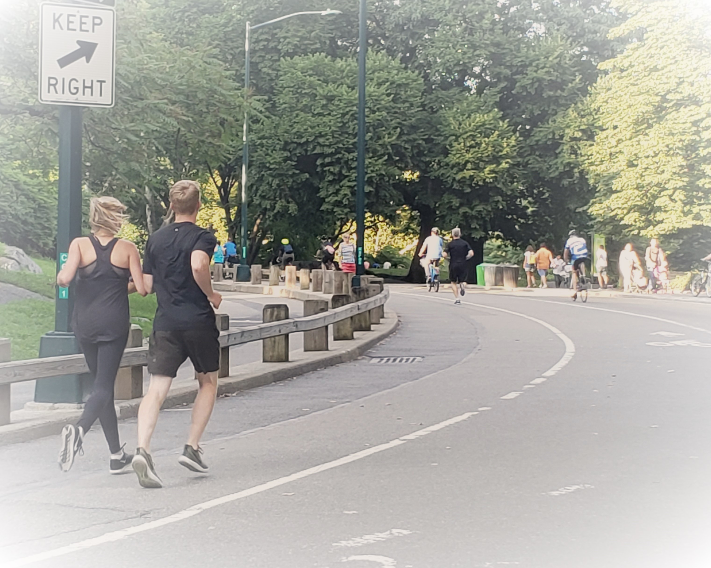

Running
There is research out that suggests that running is a powerful way to prevent disease and reduce stress. As running is one of the most effective ways to burn calories per minute, it may help you lose weight.
There are parks that offer great running trails, where you will get to enjoy being outside around other people also being active.
Bad weather today? No problem, you can run on the treadmill. Gyms such as Blink or Planet Fitness offer monthly memberships as low as $10 a month. Standard treadmills have adjustable speed and resistance features.
Tips for Running
- Wear running shoes suitable for your feet. Stores like Jack Rabbit offer a gait analysis to help you find the proper type and category of footwear.
- Build your mileage gradually. When I was training for my half-marathon, my running group and I started at a low mileage, around 2 miles. A week before the race, we were up to 9 miles.
- Take recovery days accordingly. During my training, we had rest days in between the running days. This prevents you from putting muscle strain on your legs, and allows your muscles to recover.
- You do not need to run or sprint the whole way. You can alternate between sprinting, jogging, and walking.
- Make sure that you stay hydrated. Athletic and sports stores carry sports bottles with hand straps, or runners' belts with detachable bottles.